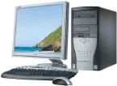

| Home | History | Monitor | AVR | CPU FAN | Memory | Video Card | Software |
| History of Computer |
|

A computer is a machine that manipulates data according to
a set of instructions.Although mechanical examples of computers
have existed through much of recorded human history. the first electronic computers were developed in the mid-20th century (1940–1945).These were the size of a large room, consuming as much power as several hundred modern personal computers (PCs).Modern computers based on integrated circuits are millions to billions of times more capable than the early machines,and occupy a fraction of the space. Simple computers are small enough to fit into a wristwatch,and can be powered by a watch battery.Personal computers in their various forms are icons of the Information Age and are what most people think of as "computers".The embedded computers found in many devices from MP3 players to fighter aircraft and from toys to industrial robots are however the most numerous. The ability to store and execute lists of instructions called programs makes computers extremely versatile, distinguishing them from calculators.The Church–Turing thesis is a mathematical statement of this versatility: any computer with a certain minimum capability is,in principle.capable of performing the same tasks that any other computer can perform. Therefore computers ranging from a mobile phone to a supercomputer. are all able to perform the same computational tasks, given enough time and storage capacity. |